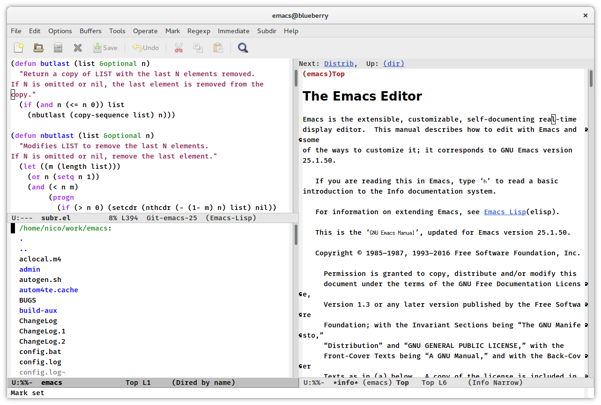

GNU Emacs
GNU Emacs
An extensible, customizable text editor — and more.
At its core is an interpreter for Emacs Lisp, a dialect of the Lisp programming language with extensions to support text editing.
 Learn moreThe features of GNU Emacs include
-
Content-sensitive editing modes, including syntax coloring, for a variety of file types including plain text, source code, and HTML.
-
Complete built-in documentation, including a tutorial for new users.
-
Full Unicode support for nearly all human languages and their scripts.
-
Highly customizable, using Emacs Lisp code or a graphical interface.
-
A large number of extensions that add other functionality, including a project planner, mail and news reader, debugger interface, calendar, and more.
-
A packaging system (
M-x list-packages) for downloading and installing extensions.
Downloading GNU Emacs
You can download GNU Emacs releases from a nearby GNU mirror; or if automatic redirection does not work see the list of GNU mirrors, or use the main GNU ftp server.
GNU Emacs development is hosted on savannah.gnu.org.
Supported Platforms
Emacs 24 runs on several operating systems regardless of the machine type. The main ones are: GNU, GNU/Linux, FreeBSD, NetBSD, OpenBSD, Mac OS X, MS Windows, and Solaris.
GNU Emacs contains code for supporting several other operating systems and machine types. For more details, see the MACHINES file, which is also distributed with GNU Emacs.
Releases
The current stable release is 24.5 (released April 10, 2015;
see also dates of older releases).
To obtain it, visit the obtaining
section.
Emacs 24 has a wide variety of new features, including:
- A packaging system and interface (M-x list-packages) for downloading and installing extensions. A default package archive is hosted by GNU and maintained by the Emacs developers.
- Support for displaying and editing bidirectional text, including right-to-left scripts such as Arabic and Hebrew.
- Support for lexical scoping in Emacs Lisp.
- Improvements to the Custom Themes system (M-x customize-themes).
- Unified and improved completion system in many modes and packages.
- Built-in support for GnuTLS, GTK+ 3, ImageMagick, SELinux, and Libxml2.
For more information, read the News file.

“Our mission is to preserve, protect and promote the freedom to use, study, copy, modify, and redistribute computer software, and to defend the rights of Free Software users.”